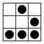
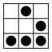

Faça um blog com Wordpress
Os serviços listados abaixo usam Wordpress para providenciar o serviço de hospedagem de blogs.
Todos estes serviços são libertários e anti comerciais, e seguem manifestos ideológicos semelhantes aos do Hacklab Independência.
Libertar.org
O libertar.org é um espaço não-governamental, não-corporativo e não-partidário destinado a coletivos, movimentos sociais e indivíduos que queiram hospedar e divulgar projetos de cunho social, cultural e ambiental tendo em vista a transformação da sociedade atual em uma sociedade mais livre e igualitária.
Network23
Free anonymous WordPress blogs for activists and agitators
Get free, anonymous blogs at NETWORK23.ORG…
Why should I"
The bigger corporate blog and web site providers such as blogger or wordpress.com are required to hand over the details of users to the authorities. We don’t keep any details to hand over (apart from your email). We think this project is a good way to support freedom of expression, decentralisation of online content and the open web.
Milharal
O Milharal é um sistema para blogs sociais!
Ele é gerenciado coletivamente por um grupo de voluntári@s, que recebe doações dos coletivos e sítios hospedados para manter sua infraestrutura funcionando.
No Blogs
Noblogs.org is a bloggin platform: it’s a virtual place where anyone can open a blog or a site and meet other people who shared the same dream. What makes this place just a little peculiar are the people who chose it over other commercial network who manage pretty the same service (like blogspot or splinder just to name a few).
Noblogs.org is a project run by the A/I Collective who has been providing communication and cospiration tools to activists for at least 10 years. Those who gathered around this blogging platform of ours share our manifesto and broadly our aims: struggle for a world where fairness, equal rights and freedom are the corner stones of people’s life; fight back a society too interested in controlling us and in knowing who we are instead of what do we think or love/hate; resist to the widespread idea that any single moment of our life can be traded with money or economically valuable stuff.
Noblogs.org is a universe made of people, collectives, associations, motleys, informal groups, and much more. And it’s about time for you to join it. What are you waiting for"
Gostou" Conte às(aos) amigas(os). Não gostou" Manda para as(os) inimigas(os)!
Kopimi Hacklab Independência 2013-2014. Este site usa Bootstrap e SocialSharePrivacy. Código fonte de ninguem.tem.blog.br
 
